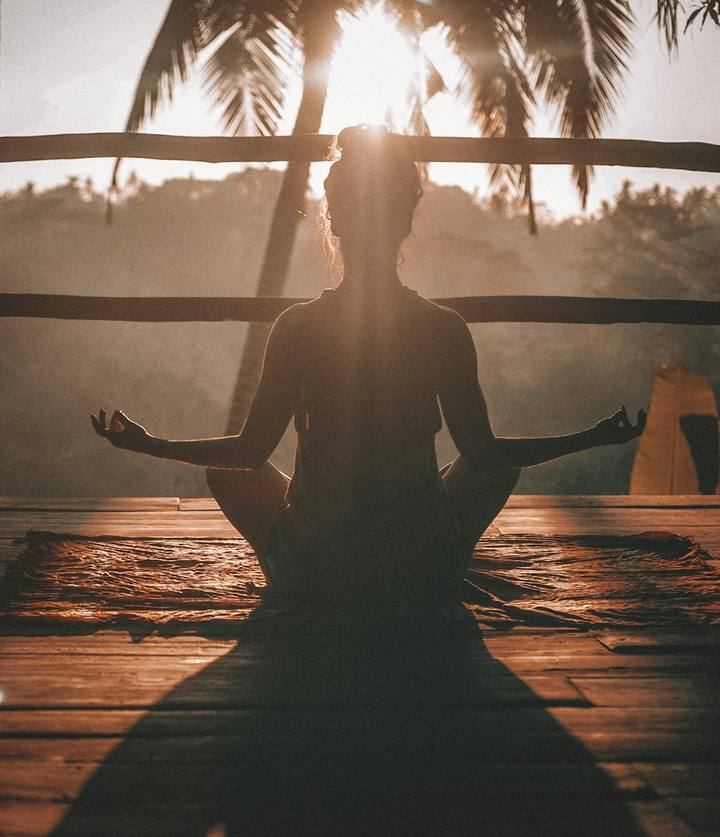
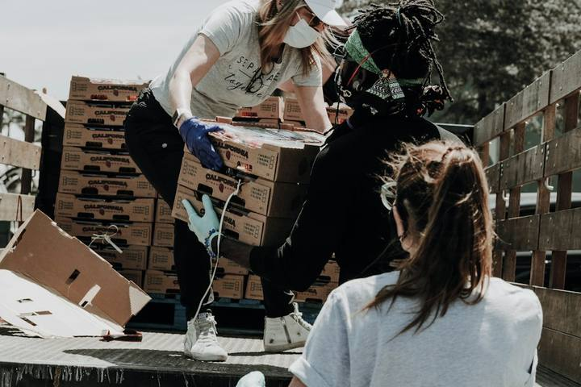

Star Bem
Um programa para promover um ambiente de trabalho mais saudável, seguro e acolhedor, cuidando das pessoas e fortalecendo a cultura organizacional.

de programa
da NR-1
Identificar, prevenir e acompanhar
Cuidar das pessoas virou obrigação legal e estratégica
O Star Bem promove um ambiente de trabalho mais saudável, seguro e acolhedor, alinhado às diretrizes da NR-1, por meio de ações voltadas à identificação, prevenção e gerenciamento dos riscos psicossociais.
O objetivo é fortalecer a saúde mental, o bem-estar emocional e a integração entre os colaboradores, construindo uma cultura organizacional baseada no cuidado, respeito e valorização das pessoas.

A NR-1 e os riscos psicossociais em números
A nova redação do capítulo 1.5 da NR-1 (Portaria MTE nº 1.419/2024) passou a exigir que os fatores de risco psicossocial sejam tratados no Gerenciamento de Riscos Ocupacionais (GRO) e no PGR. Enquanto isso, o adoecimento mental no trabalho bate recordes no Brasil.
O cenário que justifica agir agora
Afastamentos por ansiedade crescem ano a ano
Casos de afastamento por transtornos de ansiedade no Brasil (em milhares)
Compilado a partir de levantamento da ANAMT com base nos registros do INSS (jan/2023 a nov/2025). Os recortes variam entre fontes; para uso oficial, confirme nos boletins da Previdência Social e no Guia de Riscos Psicossociais do MTE.
O cuidado também gera retorno
Estudos da OMS e do Banco Mundial (2016) estimam que cada US$ 1 aplicado no cuidado com transtornos mentais comuns retorna até US$ 4 em saúde e capacidade de trabalho. Revisão da Deloitte (Reino Unido, 2024) aponta retorno médio de £4,70 por £1 investido.
O estudo da OMS mede ganho macroeconômico (saúde e produtividade), não lucro direto de um programa isolado. Use como referência de ordem de grandeza.
O que o Star Bem quer alcançar
Conectar pessoas
Aproximar colegas e equipes, reduzindo o isolamento e fortalecendo os vínculos.
Estimular socialização
Criar espaços leves de convivência dentro e fora da rotina de trabalho.
Saúde psicossocial
Promover bem-estar emocional e prevenir os riscos psicossociais da NR-1.
Hábitos saudáveis
Incentivar atividade física, movimento e equilíbrio entre trabalho e vida.
Engajamento e clima
Fortalecer o engajamento e o clima organizacional de forma sustentável.
8 Frentes da NR-1
Oito frentes de ação que transformam o cuidado com as pessoas em prática do dia a dia.
Rodas de conversa e integração entre equipes.
Campanhas de conscientização sobre saúde mental.
Incentivo à prática de atividades físicas e lazer, além de hábitos saudáveis.
Capacitação de líderes para acolhimento e escuta ativa.
Identificação e tratamento de riscos psicossociais.
Programas de apoio emocional e psicológico.
Ações de reconhecimento e valorização dos colaboradores.
Promoção do equilíbrio entre trabalho e vida pessoal.
Dez semanas, uma atividade por vez
Escala de Bem-Estar
Propostas de Atividades
Missões temáticas que atravessam o programa para engajar as equipes semana após semana.
Ação Social
Campanha solidária temática (Páscoa) que promove propósito, colaboração e impacto social. O objetivo é gerar empatia entre os colaboradores, compreender a necessidade do outro e contribuir ainda mais para o desenvolvimento pessoal de cada um.

Como medimos o impacto
Participação por atividade
Percentual de adesão da equipe a cada ação ao longo das 10 semanas.
Engajamento
Envolvimento e continuidade da participação ao longo do programa.
Feedback dos participantes
Escala de percepção de bem-estar e pesquisa de satisfação.
Os percentuais acima são ilustrativos (metas de referência) e serão substituídos pelos resultados reais coletados durante o programa.
O resultado que esperamos construir juntos
Cuidar das pessoas é construir uma cultura mais forte.